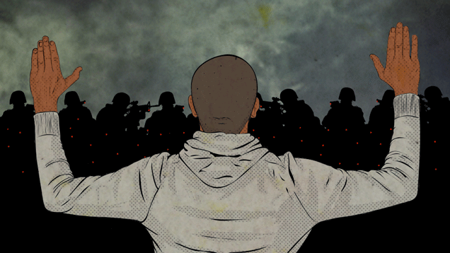

Police brutality is one of several forms of police misconduct which involves undue violence by police members. Widespread police brutality exists in many countries and territories, even those that prosecute it. Although illegal, it can be performed under the color of law.
People who are African-American/Black are twice as likely to be killed by a police officer while being unarmed compared to a Caucasian/White individual. (The Guardian)
Map of Police Violence for 2018
Police killed 1,166 people